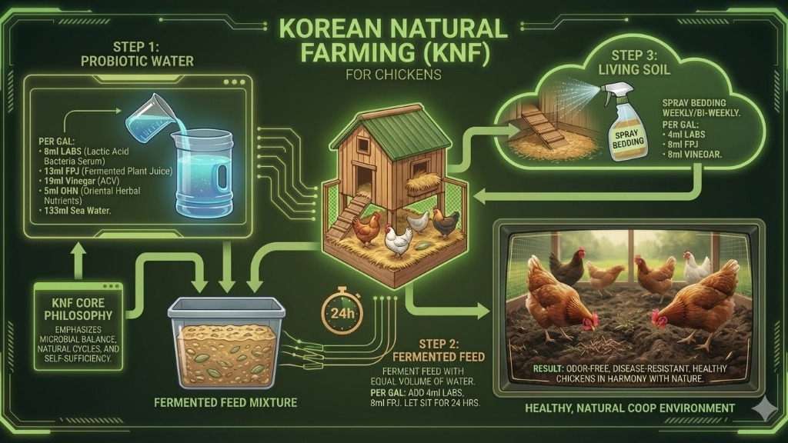

Natural Farming for the Caribbean
A complete guide to sustainable broiler and layer management using time-tested KNF inputs and formulations.
The Complete System
Three integrated steps that create a self-sustaining, natural environment for healthy poultry.

Korean Natural Farming (KNF) is a holistic approach that harnesses beneficial microorganisms to create a balanced ecosystem for your flock. By integrating probiotic water, fermented feed, and living soil management, you establish a self-reinforcing cycle that promotes gut health, boosts immunity, and maintains a naturally clean coop environment.
Daily drinking water enriched with LABs, FPJ, vinegar, and sea minerals colonizes the gut with beneficial bacteria, improving digestion and building natural disease resistance from the inside out.
Pre-digesting feed through 24-hour fermentation with LABs and FPJ unlocks nutrients, reduces anti-nutritional factors, and continues to populate the gut with beneficial microbes—improving feed conversion and overall health.
Weekly bedding sprays with the KNF mixture inoculate the litter with beneficial microorganisms that outcompete pathogens, suppress ammonia, and transform waste into valuable compost—creating an odor-free, disease-resistant environment.
Odor-free, disease-resistant, healthy chickens living in harmony with nature. The microbial balance you establish in the gut, feed, and environment work together as one integrated system—reducing your reliance on medications while improving bird health and productivity.